机器学习线性代数基础
概述
本书介绍
数学是机器学习绕不开的基础知识，传统教材的风格偏重理论定义和运算技巧，想以此高效地打下机器学习的数学基础，针对性和可读性并不佳。本书以机器学习涉及的线性代数核心知识为重点，进行新的尝试和突破：从坐标与变换、空间与映射、近似与拟合、相似与特征、降维与压缩这5个维度，环环相扣地展开线性代数与机器学习算法紧密结合的核心内容，并分析推荐系统和图像压缩两个实践案例，在介绍完核心概念后，还将线性代数的应用领域向函数空间和复数域中进行拓展与延伸；同时极力避免数学的晦涩枯燥，充分挖掘线性代数的几何内涵，并以Python语言为工具进行数学思想和解决方案的有效实践。
本书适合实践于数据分析、信号处理等工程领域的读者，也适合在人工智能、机器学习领域进行理论学习和实践，希望筑牢数学基础的读者，以及正在进行线性代数课程学习的读者阅读。
(摘自：机器学习线性代数基础 (豆瓣) (douban.com))
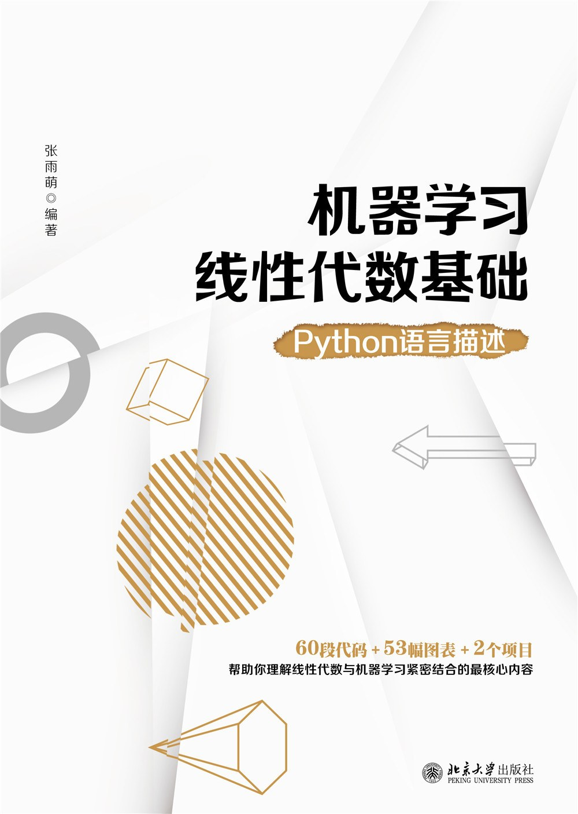
阅读目的
掌握机器学习数学基础，记录学习难点。
相关资料
《机器学习线性代数基础：Python语言描述》学习资料—— 链接：https://eyun.baidu.com/s/3c3QH00S 提取码：zD33
坐标与变化（第一章）
向量
基本意义
二维向量 \[ \begin{bmatrix} 4\\5 \end{bmatrix} \] 可以被理解为点(4,5)，也可被认为(0,0)到(4,5)的有向线段。
列向量
一般来说，都是使用列向量，这是因为方便进行向量坐标变换、空间映射。
乘法
内积（点乘）
对应位置相乘，结果相加，得到一个数。
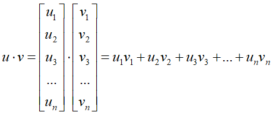
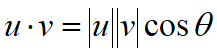
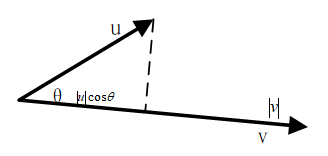
含义:a在b上投影长度
实现：
1
2
3
4import numpy as np
u = np.array([3, 5, 2])
v = np.array([1, 4, 7])
print(np.dot(u, v))外积（叉乘）
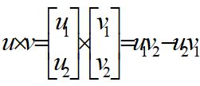
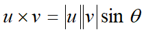
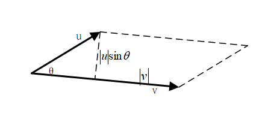
含有：二维平面中向量的外积表示两个向量张成的平行四边形的面积。
实现：
1 | import numpy as np |
基底
基底条件
向量数量足够
如三位空间的每一个基向量维数必须是3
满足线性无关
张成空间
定义：对于一组向量，由他的所有线性组合所构成的空间就称之为这一组向量的张成空间。
矩阵
特殊矩阵
方阵
定义：行数和列数相等的一类矩阵
实现：
1
2
3
4
5
6
7import numpy as np
A = np.array([[1, 1, 1, 1],
[2, 2, 2, 2],
[3, 3, 3, 3],
[4, 4, 4, 4]])
print(A)
print(A.shape)转置与对称矩阵
转置
定义：行和列上的元素进行位置互换
实现:
1
2
3
4
5import numpy as np
A = np.array([[1, 2, 3, 4],
[5, 6, 7, 8]])
print(A)
print(A.T)对称矩阵
左上到右下对角线对称
零矩阵
定义：对于所有元素都等于0的矩阵，我们将其称之为零矩阵，记作O
实现：
1
2
3import numpy as np
A = np.zeros([5, 3])
print(A)对角矩阵
定义：在他的非对角线位置上矩阵的元素全部都为0
实现：
1
2
3import numpy as np
A = np.diag([1, 2, 3, 4, 5])
print(A)单位矩阵
定义：对角位置上元素均为1，其余位置元素均为0
实现：
1
2
3import numpy as np
I = np.eye(5)
print(I)
矩阵间乘法
要求：
左边矩阵的列数和右边矩阵的行数必须相等；
左边矩阵的行数决定了最终结果矩阵的行数；
右边矩阵的列数决定了最终结果矩阵的列数。
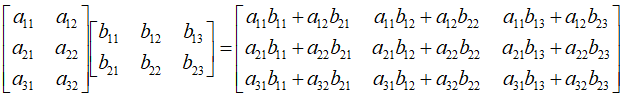
矩阵乘向量
在指定矩阵乘法作用下，将原始空间中的向量映射转换到目标空间中的新坐标。
矩阵乘向量
基本事实
矩阵与向量的乘法，本质上可以看作是对向量基底的一种改变
列的角度
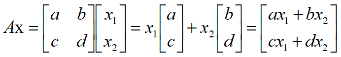
向量的基底变换
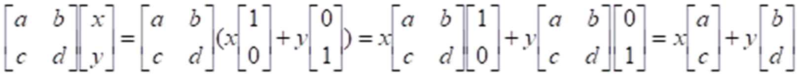
$$
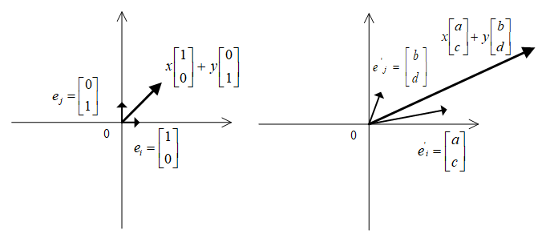
得到的是在原始空间中的新坐标(ax+by, cx+dy)，而在新空间中的坐标仍然是(x, y)
m×n矩阵乘以n维列向量
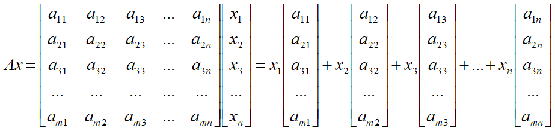
说明
当n > m的时候，显然这n个向量线性相关，因此不构成基底；
当n < m的时候，即使这n个向量线性无关，由于他们不能表示m维空间中的所有向量，因此也不能称之为m维目标空间的基底；
当且仅当n = m，且这n个向量线性无关的时候，他们才能称之为目标空间中的一组新的基底。
空间与映射（第二章）
矩阵
空间映射
由于矩阵乘法的作用，原始向量的空间位置甚至其所在空间的维度和形态都发生了改变，这便是矩阵乘法的空间映射作用。
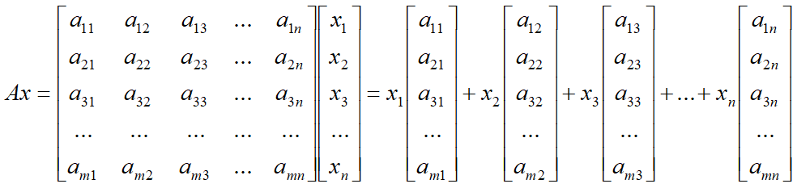
m<n矮胖矩阵空间压缩（降维）
对2×3矩阵，3个二维向量必然线性相关。下面进行分类讨论：
3个二维目标向量满足不全部共线
此时，三维空间被矩阵压缩成二维平面。
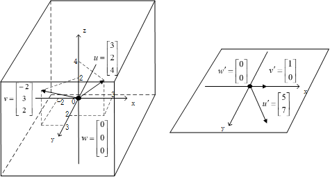
3个二维向量是共线向量
被压缩成平面内的一条直线。
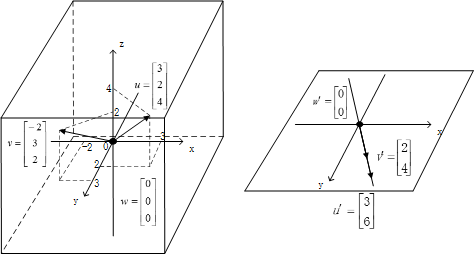
m>n高瘦矩阵无法覆盖目标空间
一个事物想凭空出现是不可能的。
对3×2矩阵
两个向量线性无关
映射到同一平面上
两个向量线性相关
映射到同一直线上
n×n方阵
对3×3矩阵
3个列向量线性无关
映射后得到仍是三维空间
线性相关但不共线
映射后到同一平面
线性相关且共线
映射后到同一条直线
秩
像空间：一个空间经矩阵映射后得到的新空间
像空间维度的决定因素：空间映射矩阵各列的线性相关性
由各列所张成的空间维数就是原始空间映射后的像空间维数——秩
秩也可以说成是该矩阵线性无关的列的个数
实现：
1 | import numpy as np |
逆矩阵和逆映射
逆矩阵
如果已知结果向量的坐标y去反推原始向量的坐标x，这个过程我们就将其称之为逆映射或者逆问题，因为逆映射也是一种映射过程，因此同样有矩阵与之相对应，那么我们就将表征逆映射的矩阵称之为矩阵A的逆矩阵，写作：A -1 。
零空间
对于给定的矩阵A，在映射的作用下满足等式Ax=0成立的向量x的集合，我们称之为矩阵A零空间，记作：N(A)。
如果一个矩阵A存在着逆映射，则意味着其映射后的点是要能被唯一还原的，因此显然，矩阵A的零空间N(A)对应的不能是一维直线或者是一个二维平面，而只能是一个点，也就是原始空间中的零向量。即，如果一个矩阵满足可逆，他的零空间N(A)必须是0维的。
列空间
一个原始空间经过矩阵A的映射得到的对应空间，本质上就是该矩阵各列所有线性组合的结果集合，我们就将其称之为矩阵A的列空间C(A)。
逆矩阵存在条件
首先，矩阵必须首先得是一个方阵，否则目标空间中的向量要么对应多个原始空间中的向量，要么找不到原始空间中的向量。换句话说，在y=Ax的映射中，对应在原始空间中的向量x的存在性和唯一性至少有一个被破坏了。
其次，在矩阵A是n阶方阵的前提条件下，以下的任意一个条件都与矩阵满足可逆性等价：
矩阵A的零空间的维数为0，或列空间的维数为n；
列向量a1, a2, a3, ……an满足线性无关。
实现
1 | import numpy as np |